Thermal energy storage · Validation study
Phase change & thermal energy storage
Modelling the charging and discharging of solid–liquid phase change materials, with liquid-fraction comparisons against the literature.
View study & validation →
Computational fluid dynamics, multiphase flow & thermal sciences
I use computational modelling to study phase change, thermal energy storage and heat transfer.
Numerical validation studies using ANSYS Fluent and OpenFOAM, with comparisons against published work.
Thermal energy storage · Validation study
Modelling the charging and discharging of solid–liquid phase change materials, with liquid-fraction comparisons against the literature.
View study & validation →
Building energy · Validation study
Investigating the thermal response of plaster containing solid–solid phase change materials under different boundary conditions.
View study & validation →Also in progress: free-falling droplets and freezing using the Volume of Fluid method.
Undergraduate thesis: mechanical characterisation of water-lily fibre and epoxy composites · July 2026 · Supervisor: Dr. Fazle Rabbi.
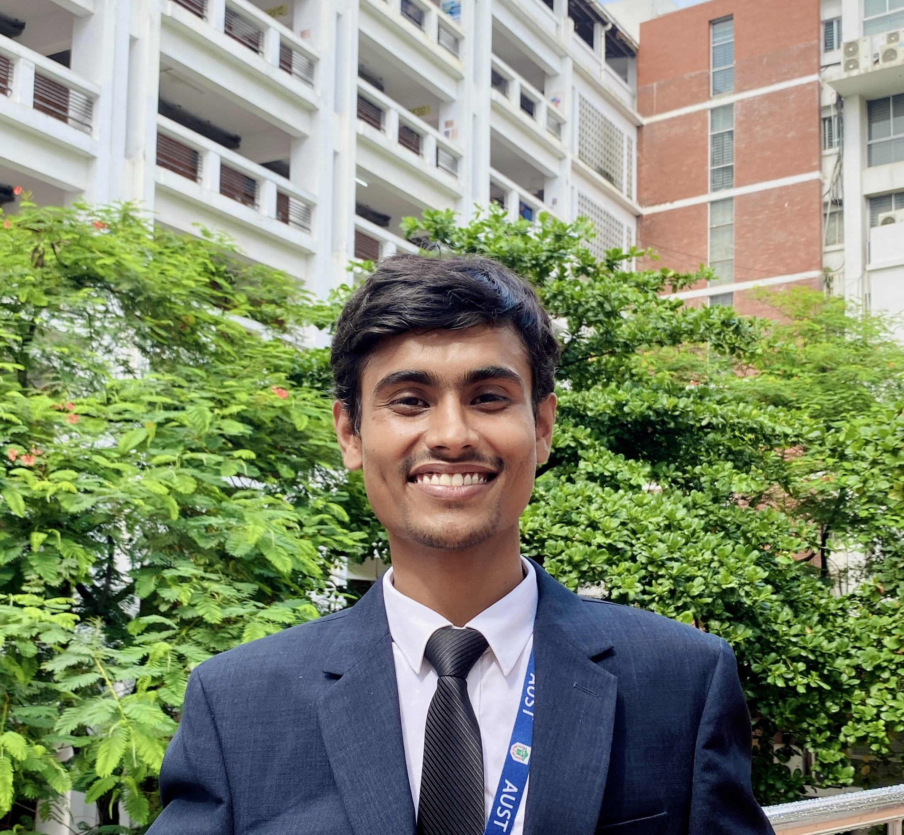
I graduated in Mechanical Engineering from Ahsanullah University of Science and Technology (AUST) in July 2026. I work remotely as a CFD Simulation Engineer with MACPROTEC, USA.
My research interests centre on multiphase flow, heat transfer and phase change. My current work includes numerical validation of thermal energy storage models, PCM-loaded building materials, and droplet deformation and freezing using ANSYS Fluent and OpenFOAM.
I am open to graduate study and research collaboration in fluid dynamics, thermal sciences and computational modelling. Get in touch to discuss research interests and potential projects.
Simulating free-falling droplets and freezing using the Volume of Fluid method in ANSYS Fluent and OpenFOAM.
Validating numerical models of solid–liquid and solid–solid phase change materials against published studies.
Conducting experimental and numerical work on composite materials.
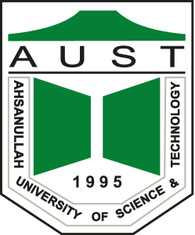
Bachelor of Science in Mechanical Engineering
Tejgaon Industrial Area, Dhaka 1208, Bangladesh

Higher Secondary Certificate
Uttara, Dhaka 1230, Bangladesh
Secondary School Certificate
Sapahar, Naogaon, Bangladesh
Coursework and training projects in machine design, instrumentation and manufacturing.
ME 3201 Machine Design · ANSYS Workbench 2021 R2, Autodesk Inventor, SolidWorks
Designed and analysed the gear train driving a rotary screw compressor, from ratio selection and tooth geometry through to stress checks on the loaded members.
Open the reportME 3202 Machine Design Sessional · ANSYS Workbench 2021 R2, SolidWorks
Sized a belt drive for a starter motor, covering pulley geometry, belt selection, tension and power transmission, with CAD and FEA support.
With Jubaida Hossain Basoti, Eyaman Islam and Rakibul Hasan Shawon. Supervised by Mr. Nasim Mia, Lecturer, Department of Mechanical and Production Engineering.
Open the reportME 3110 Instrumentation & Measurement Sessional · Arduino IDE, SolidWorks
Built an Arduino Uno system with pH, turbidity, TDS and temperature sensors to judge water safety for drinking, agriculture and environmental use. The build handled automated data collection, wireless monitoring and on-screen results.
First place by audience choice at Mechanical Project Showcasing, Fall 2023.
Open the reportAttachment Training Programme · Bangladesh Industrial Technical Assistance Centre
Hands-on training in heat treatment, CNC machining, lathe operation, moulding and casting, which built up a working picture of both traditional and advanced manufacturing processes. Served as team leader for the programme.
Open the reportME 4201 Power Plant Engineering · NREL System Advisor Model, Global Solar Atlas, SREDA Net Metering Calculator
Designed a ground-mounted 50 kWp solar plant for a mixed college, shop and household load in Brahmanbaria, from the hourly demand profile and solar resource assessment through to module and inverter sizing, string layout and grid interconnection. Annual yield and system losses were simulated in SAM; net metering savings, payback and avoided emissions were worked out against the SREDA 2025 guideline.
Open the reportME 4205 Mechatronics · LabVIEW
Built one LabVIEW program covering three experiments: sensible heat exchange with absorbed and released indicators, two-signal vibration analysis with FFT and power spectral density, and pipe flow with Reynolds-based laminar, transitional and turbulent classification. The flow panel flags results above Re 25000, where the laminar solution no longer holds.
Supervised by Dr. Qazi Talal, Assistant Professor, Department of Mechanical and Production Engineering.
Open the reportNumerical studies in thermal energy storage, building energy and multiphase heat transfer using ANSYS Fluent and OpenFOAM, alongside experimental work on natural-fibre composites. The numerical studies include model validation against published research.
Thermal energy storage · Numerical validation
Research focus: The thermal behaviour of phase change materials during charging and discharging, and the effect of model parameters on heat transfer.
Building energy · Numerical validation
Research focus: The thermal response and energy-saving potential of plaster containing solid–solid phase change materials.
Multiphase flow · Work in progress · ANSYS Fluent & OpenFOAM
Research focus: Droplet deformation and heat transfer during free fall, impact and freezing.
Undergraduate thesis · Experimental research · Completed July 2026
Thesis: Experimental Characterization of Nymphaea Rubra (Water Lily) Natural Fiber and Its Epoxy Composite through Mechanical Analysis.
AUST · Supervisor: Dr. Fazle Rabbi · Three-member research team
Research focus: Water-lily natural fibre as a sustainable reinforcement for epoxy-based polymer composites.
Published studies used as benchmarks and background for the work above.
Eccentricity optimization of an inner flat-tube double-pipe latent-heat thermal energy storage unit
View on publisher siteNumerical investigation on consecutive charging and discharging of PCM with modified longitudinal fins in shell and tube thermal energy storage
View on publisher siteExperiments and Modeling of Solid–Solid Phase Change Material-Loaded Plaster to Enhance Building Energy Efficiency
View on publisher siteTwo-dimensional analogies to the deformation characteristics of a falling droplet and its collision
View on publisher siteSimultaneous impact of droplet pairs on solid surfaces,
View on publisher siteImpacting-freezing dynamics of a supercooled water droplet on a cold surface: Rebound and adhesion
View on publisher siteSimulation animations, laboratory work and project demonstrations.
Videos will be added here as they become available.
This video presents my numerical validation work based on Simultaneous impact of droplet pairs on solid surfaces by A. Goswami and Y. Hardalupas (2023), listed as reference [5]. The study serves as the benchmark for comparing droplet-impact behaviour in my simulation.
MathWorks Training Services · 26 December 2024
Hands-on practice in matrix manipulation, scripting, automation, data visualisation and control structures, which laid the groundwork for computational analysis and engineering simulation.
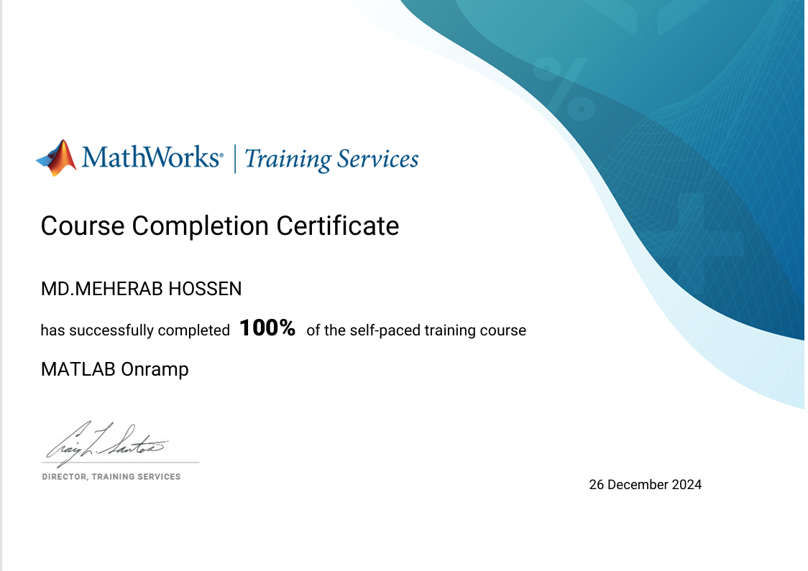
AUST Mechanical Society · Mechanical Project Showcasing, Fall 2023
Certificate of appreciation for the Arduino-based water quality monitoring system, which took first position by audience choice.
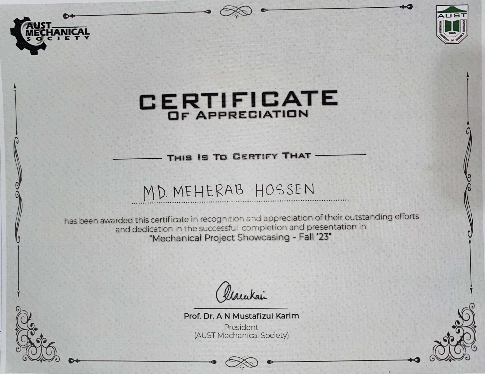
BITAC, Ministry of Industries, Government of Bangladesh · March 2024
Completed the attachment training programme as team leader, which sharpened technical and analytical skills alongside coordination and decision-making.
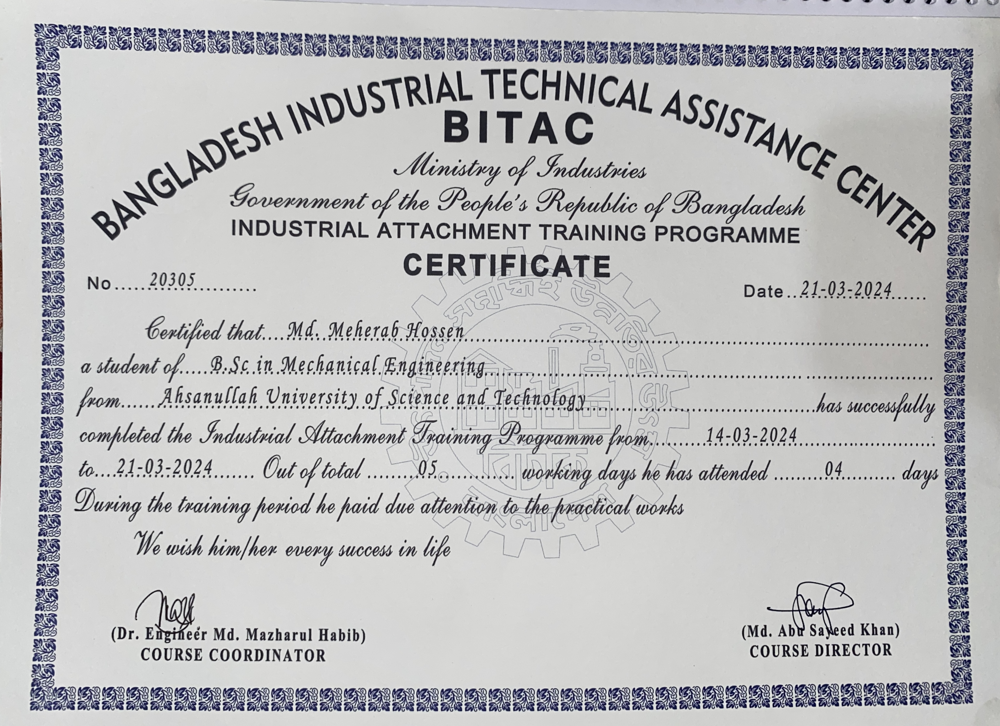
ANSYS Fluent, OpenFOAM, ANSYS Rocky, STAR-CCM+, ANSYS FEA
MATLAB, C, Python
Microsoft Office (advanced Excel), LaTeX, Mendeley
SolidWorks, Geomagic Design X, SCENE (FARO), CloudCompare, MeshLab, ANSYS Design Modeler, Autodesk Inventor (beginner)
Contours, meshes and plots from simulation and laboratory work.
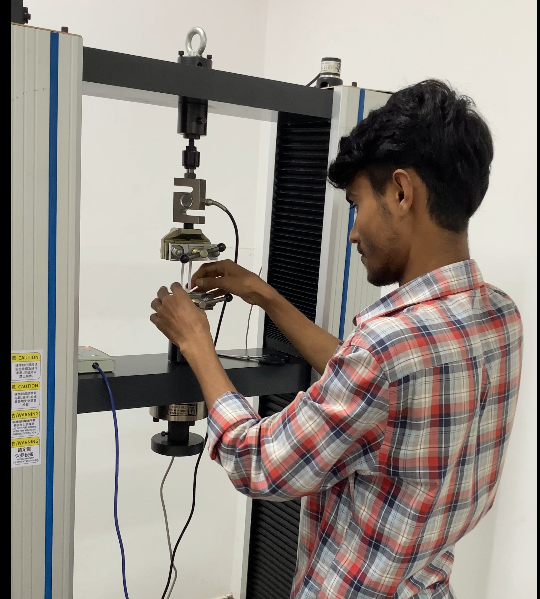
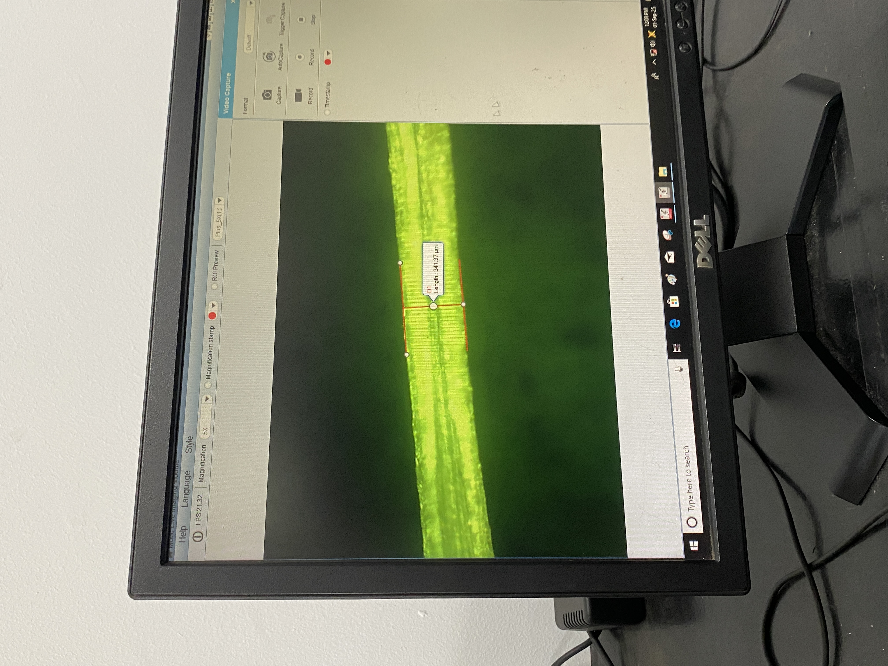
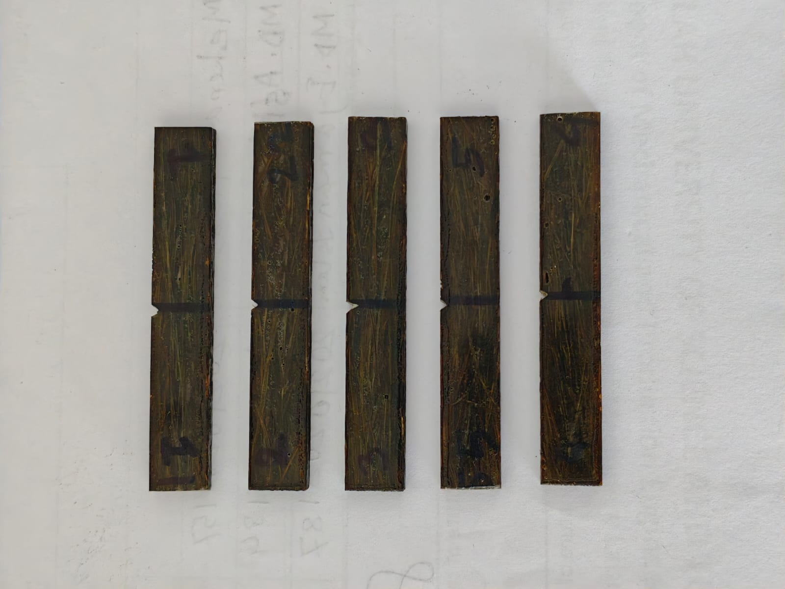
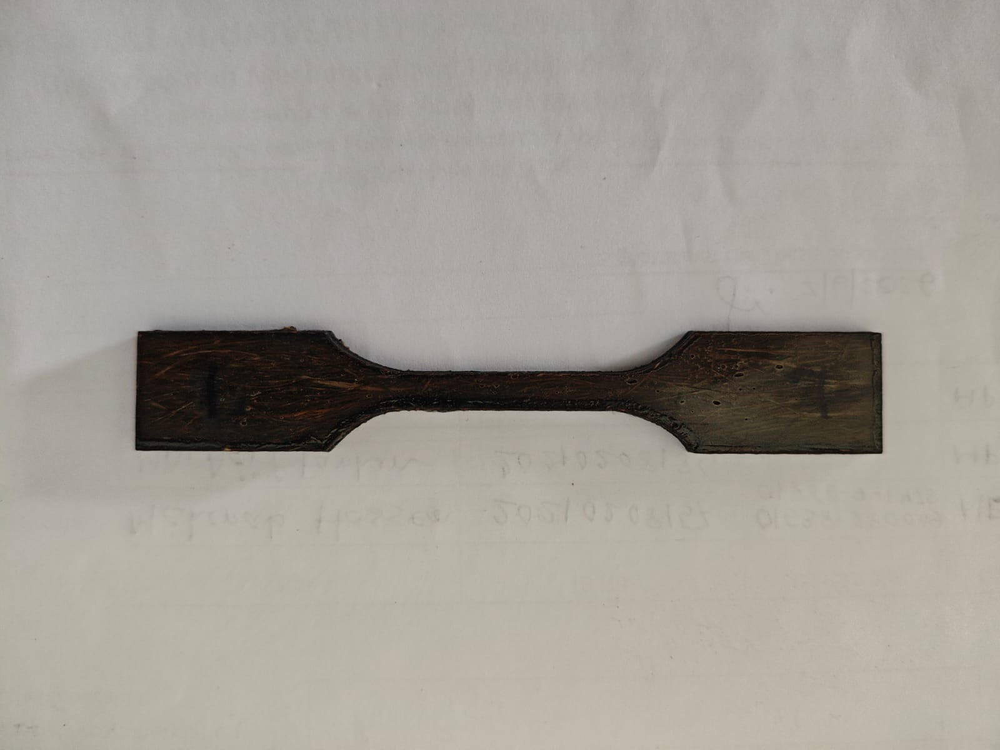
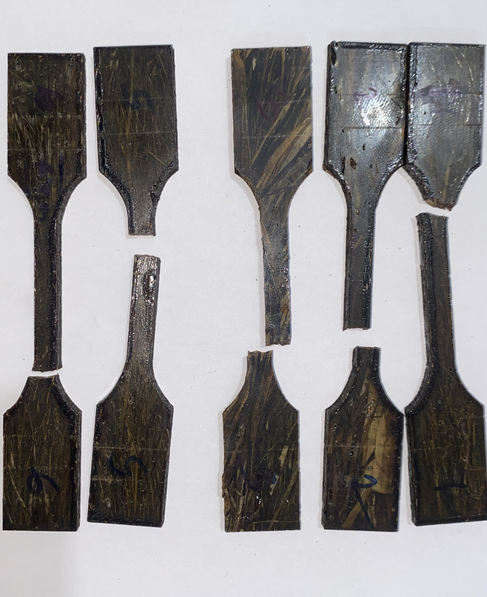
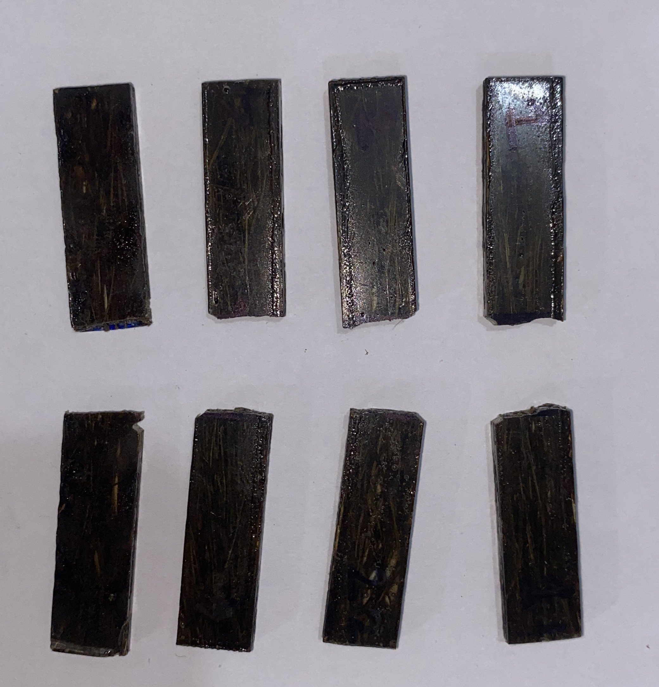
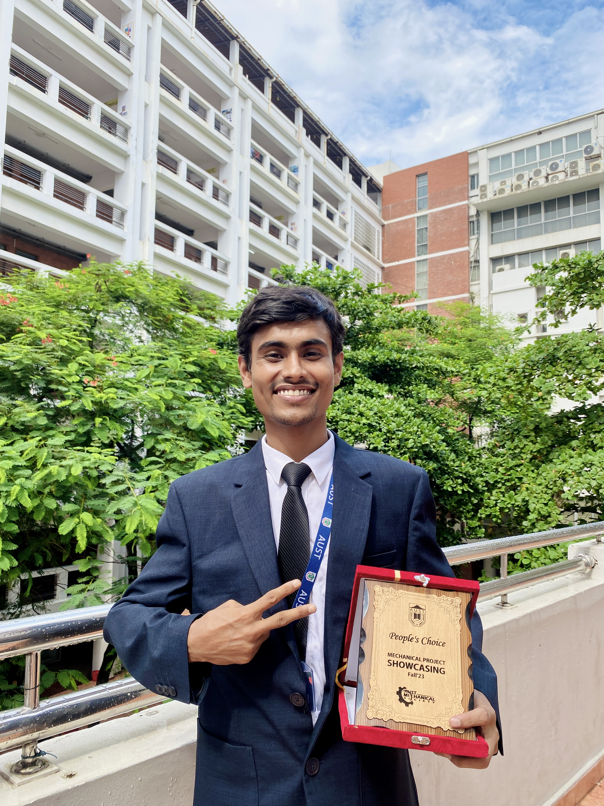
Mechanical Project Showcasing, Fall 2023 · AUST Mechanical Society
Our team built an Arduino Uno system with pH, turbidity, TDS and temperature sensors for real-time water analysis. It took first position by audience choice among all project groups, for its take on IoT-driven environmental monitoring.
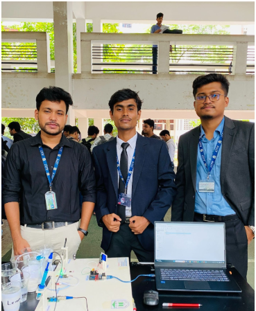
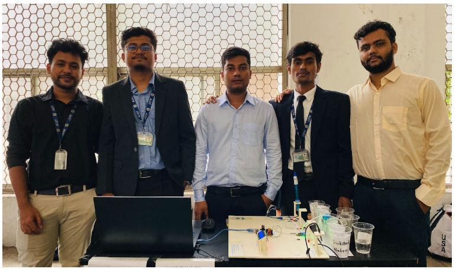
Manuscripts from the phase change material and composite work are in preparation. Journal and conference papers will appear here once published.
Get in touch about the workOpen to research collaboration and graduate study in fluid dynamics, thermal sciences and computational modelling.